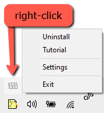

Alaskronym.
Acronym software, made by an Alaskan.

For Windows 10/8/7


Why use acronyms and abbreviations?
Acronyms can be an efficient way of communicating
verbally and in writing. Acronyms and abbreviations are simply a
layer of abstraction for common words or phrases. Think about
this, we don't spell out individual words, letter by letter,
when we are speaking (that would take too long!), we simply
combine the letters into syllables and say the word, the natural
progression is to simplify commonly used words and phrases into
abbreviations!
Both the Modern Language Association and American
Psychological Association writing styles provide widely accepted
guidance on how and when to use acronyms.
- https://blog.apastyle.org/apastyle/abbreviations/
- https://apastyle.apa.org/style-grammar-guidelines/abbreviations
If you work in an industry or government that relies heavily on acronyms and jargon, this program is designed to help you reference and type commonly used acronyms quickly and consistently.
This software is open source, MIT license!
Copyright 2020, Dom Pannone
Permission is hereby granted, free of charge, to any person
obtaining a copy of this software and associated documentation
files (the "Software"), to deal in the Software without
restriction, including without limitation the rights to use,
copy, modify, merge, publish, distribute, sublicense, and/or
sell copies of the Software, and to permit persons to whom the
Software is furnished to do so, subject to the following
conditions:
The above copyright notice and this permission notice shall be
included in all
copies or substantial portions of the Software.
THE SOFTWARE IS PROVIDED "AS IS", WITHOUT WARRANTY OF ANY KIND,
EXPRESS OR
IMPLIED, INCLUDING BUT NOT LIMITED TO THE WARRANTIES OF
MERCHANTABILITY,
FITNESS FOR A PARTICULAR PURPOSE AND NONINFRINGEMENT. IN NO
EVENT SHALL THE
AUTHORS OR COPYRIGHT HOLDERS BE LIABLE FOR ANY CLAIM, DAMAGES OR
OTHER
LIABILITY, WHETHER IN AN ACTION OF CONTRACT, TORT OR OTHERWISE,
ARISING FROM,
OUT OF OR IN CONNECTION WITH THE SOFTWARE OR THE USE OR OTHER
DEALINGS IN THE
SOFTWARE.
Source code available on GitHub! https://github.com/meta-cognition/alaskronym